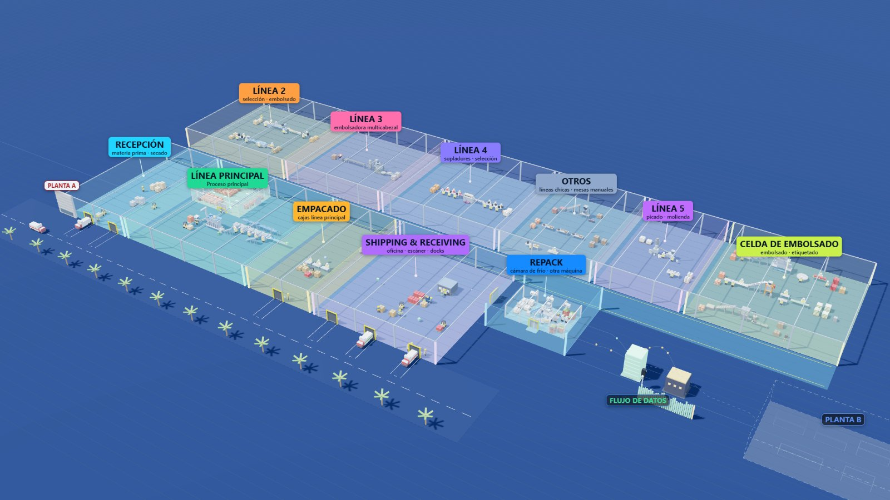

A production floor you can explore — and trust.
Built a 3D digital twin connected to production records, turning scattered spreadsheets and system logs into a navigable view of plant activity. Every displayed figure can be traced back to its source; missing data stays visible instead of being guessed.
0 manual update steps. Daily data is added, tested and published automatically. 0 overlapping labels across 29 measured views.